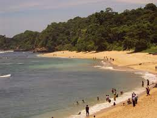
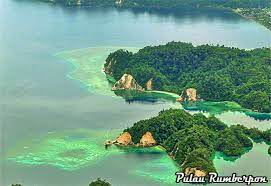

1. Raja Ampat

Kepulauan Raja Ampat berada di bagian paling barat Papua dan membentang di area seluas kurang lebih 4,6 juta hektar. Kabupaten Raja Ampat terdiri dari 4 pulau besar yaitu Pulau Waigeo, Batanta, Salawati dan Misool, dan 1.847 pulau-pulau kecil lainnya.
Nah, nama Raja Ampat sendiri diyakini berasal dari legenda masyarakat setempat yang percaya bahwa zaman dahulu kala ada seorang wanita yang menemukan tujuh telur, empat telur tersebut menetas menjadi raja-raja yang berkuasa di empat
pulau utama. Tersisa tiga lainnya, satu menjadi batu, satu menjadi wanita, dan satu lagi menjadi makhluk gaib atau hantu.Terlepas legenda yang dipercayai masyarakat setempat, keindahan yang disuguhkan oleh Raja Ampat merupakan fakta
yang tak bisa diganggu gugat.
2. Pantai Amai

Banyak kegiatan yang bisa dilaksanakan oleh wisatawan, mulai dari bermain voli, snorkeling, berenang di pantai hingga sekadar relaksasi. Hal yang paling terkenal dari pantai ini ialah karena lokasinya yang menjadi pertemuan antara air asin dengan tawar.
Ini tak lepas dari posisinya yang tak jauh dari muara. Berlibur ke Pantai Amai, orang tua tak perlu khawatir untuk mempersilahkan anaknya berenang di pantai. Karena, tak ada terumbu karang di area bibir pantai. Pasir putih menghampar
luas di seluruh penjuru pantai. Eksotisme Pantai Amai ditambah dengan posisinya yang berada di Samudera Pasifik.
3. Pulau Rumberpon

Pulau ini memiliki pantai yang indah, yaitu Pantai Pasir Panjang, dari pasir kuarsa putih, tidak berkarang, dan panjangnya mencapai 6.000 meter. Air laut di sekitar pulau ini jernih dan terdapat rataan terumbu (reef flat) di sepanjang tepi pantai dengan
profil dasar laut yang landai hingga sepanjang 100 meter ke tebing. Karang berkelas dunia tumbuh disini. Hamparan terumbu karang hampir tersebar merata mengelilingi pulau ini. Di kawasan perairan ini dapat dilakukan berbagai kegiatan,
seperti: snorkeling, scuba diving, selancar angin, ski air, dan memancing. Kegiatan lain yang dapat dilakukan adalah pengamatan burung (misal: elang laut) dan satwa khas lainnya, seperti: kuskus. Di pulau ini juga terdapat padangan
alam cukup luas dimana terdapat satwa buru rusa. Pada habitat mangrove dan padang lamun dapat ditemukan duyung dan penyu laut. Untuk mencapai Pulau Rumberpon dapat langsung dari Manokwari melalui laut dengan menggunakan longboat selama
5,5 jam atau melalui jalan darat dari Manokwari ke Ransiki (memakan waktu sekitar 3 jam) yang kemudian dilanjutkan melalui laut dari Ransiki ke Pulau Rumberpon dengan menggunakan longboat selama sekitar 2 jam.